System view
总体实验架构

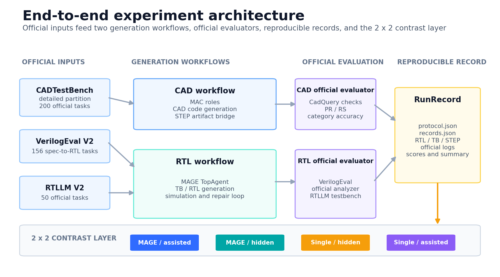
CAD 与 RTL 输入沿两条生成链路进入官方评测，最终汇聚到统一 RunRecord 与四组对照层。
多智能体 RTL 生成与跨基准评测。从 CAD 基线到 VerilogEval 与 RTLLM 跨基准迁移，再到单 Agent 对照与修复审计。全部图表读取冻结结果，统一呈现官方评分口径、效应方向与证据边界。
两张结构图给出完整实验链路与 adapter 替换边界，便于答辩时快速建立全局认识。

CAD 与 RTL 输入沿两条生成链路进入官方评测，最终汇聚到统一 RunRecord 与四组对照层。
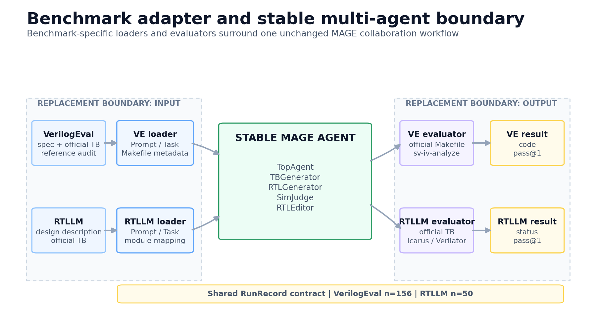
VerilogEval 与 RTLLM 各自替换 loader、模块名映射与官方 evaluator，MAGE 协作关系保持原样。
主图直接使用各官方 evaluator 的最终 RTL 结果，重复图保留三次运行的离散程度。
Complete denominators · official evaluator · pass@1
| Arm | Architecture | Testbench | VerilogEval V2 | RTLLM V2 |
|---|---|---|---|---|
| A | MAGE | Assisted | 141/15690.4% | 42/5084.0% |
| B | MAGE | Hidden | 115/15673.7% | 36/5072.0% |
| C | Single | Hidden | 121/15677.6% | 37/5074.0% |
| D | Single | Assisted | 125/15680.1% | 41/5082.0% |
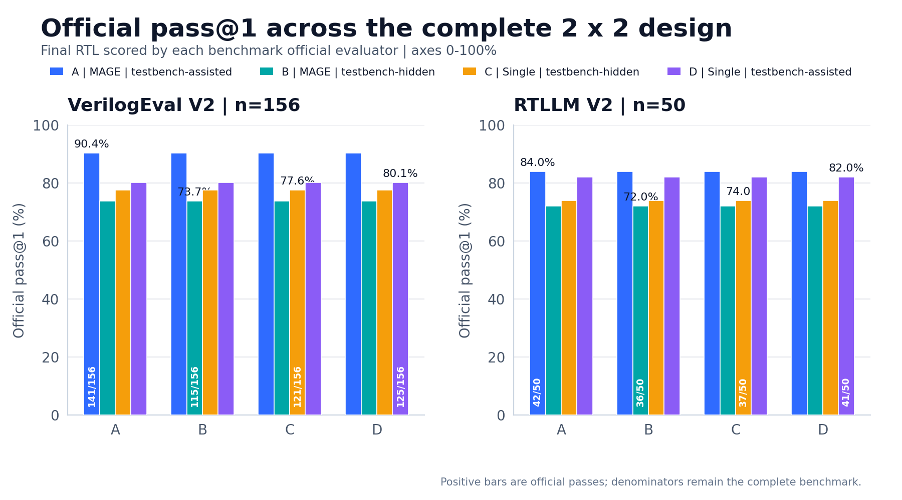
A/B/C/D 四组全量 pass@1 来自各基准官方 evaluator，分母保留原始全部题目。
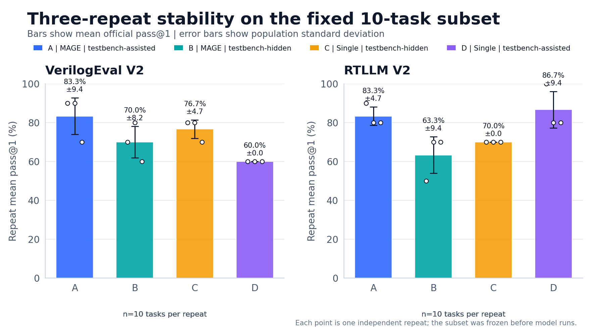
固定 10 题子集的三次重复均值与总体标准差，空心点保留每次独立运行结果。
森林图同时呈现点估计与区间。正值偏向 second arm，负值偏向 first arm，空心点表示区间跨过零线。
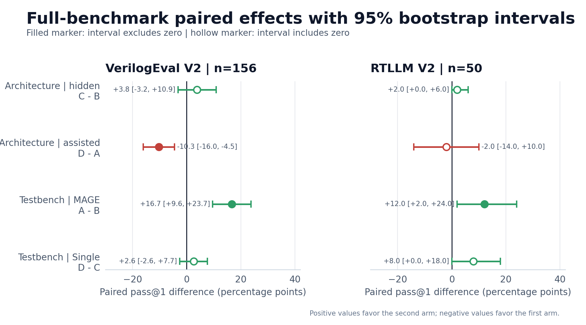
森林图展示架构与 testbench 可见性的配对效应，实心点对应区间离开零线。
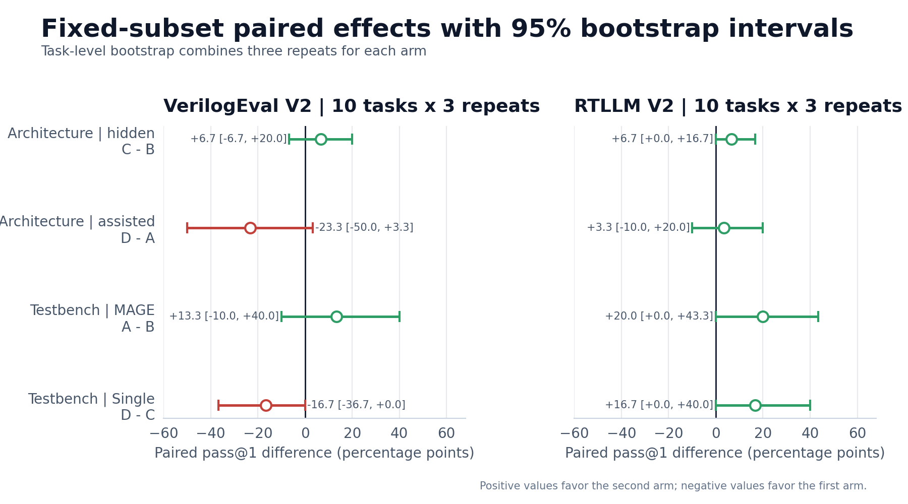
三次重复按题目聚合后重新估计配对效应，区间宽度反映子集规模与模型波动。
诊断图区分预设复杂子集与官方失败构成，保留独立分析口径。
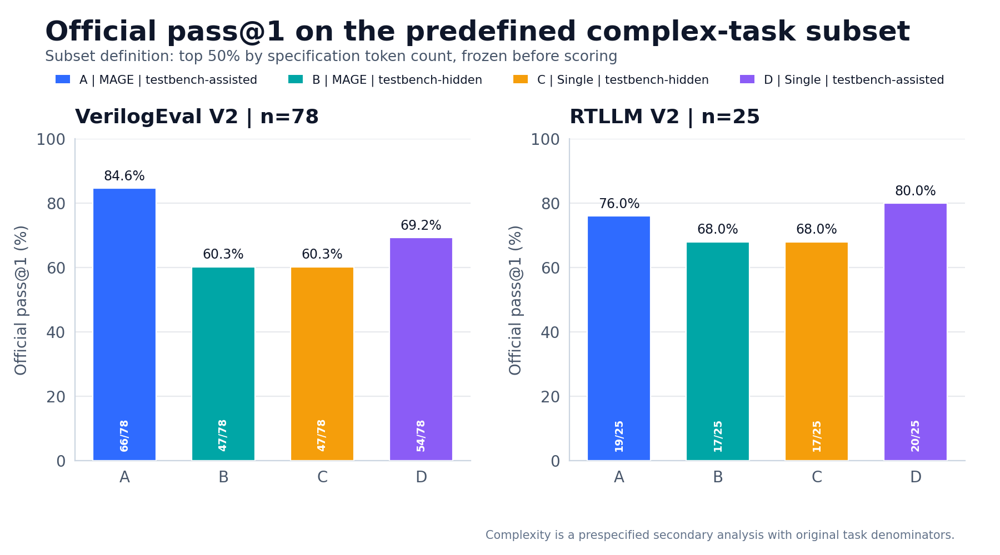
题目在正式评分前按规格 token 数冻结为前 50%，图表沿用统一子集与官方判定。
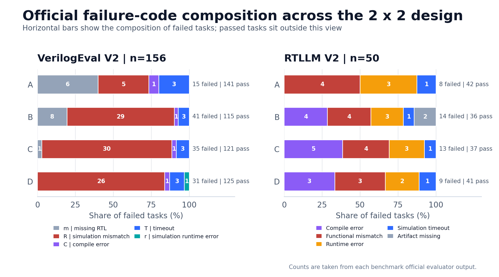
失败任务按官方 code 或仿真状态分类，柱末保留每个 arm 的失败总数。
同一官方 evaluator 分别检查 round-1 与最终 RTL，修复收益和回归均保留。
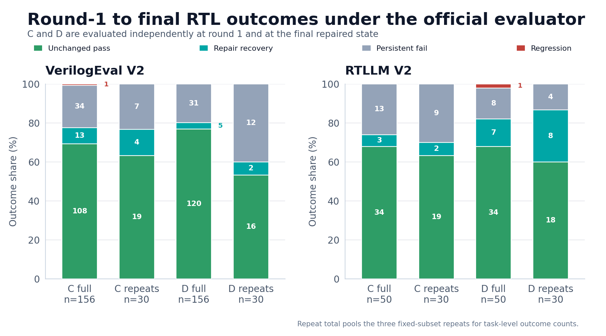
全量与三次重复合计同时展示，颜色对应稳定通过、修复恢复、持续失败与回归。
正式 detailed run 的总指标、六类检查、生成实体图册和可旋转模型集中索引。
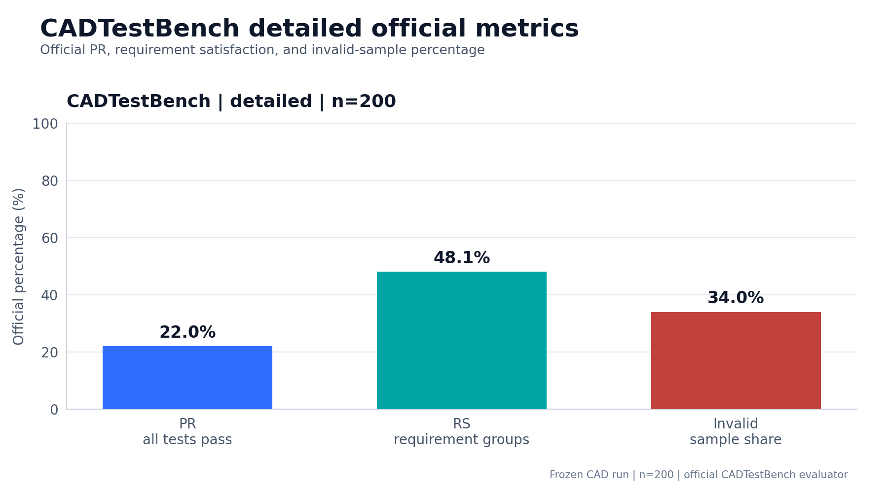
CADTestBench detailed 分区共 200 题，PR、RS 与无效样本比例读取自正式 CSV。
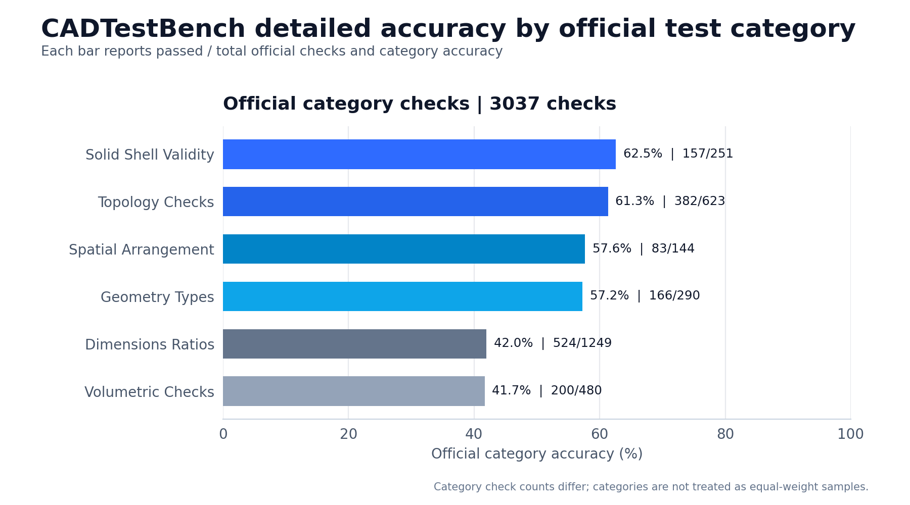
六类官方检查共 3037 项，右侧标签保留每类 passed / total。
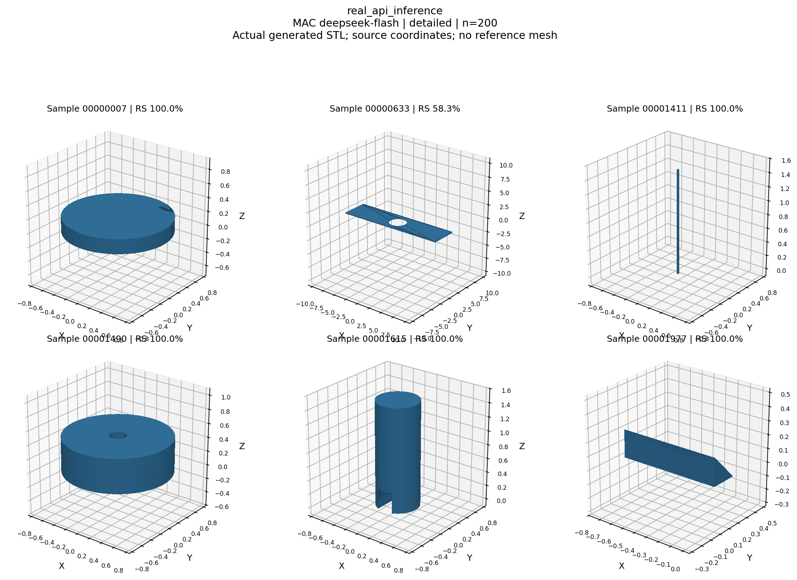
正式 CAD run 的生成实体总览，使用实际导出的 STL 网格。
Open the standalone viewer to rotate the frozen generated model.
正式 CAD run 的可旋转模型入口，用于答辩现场查看生成实体。